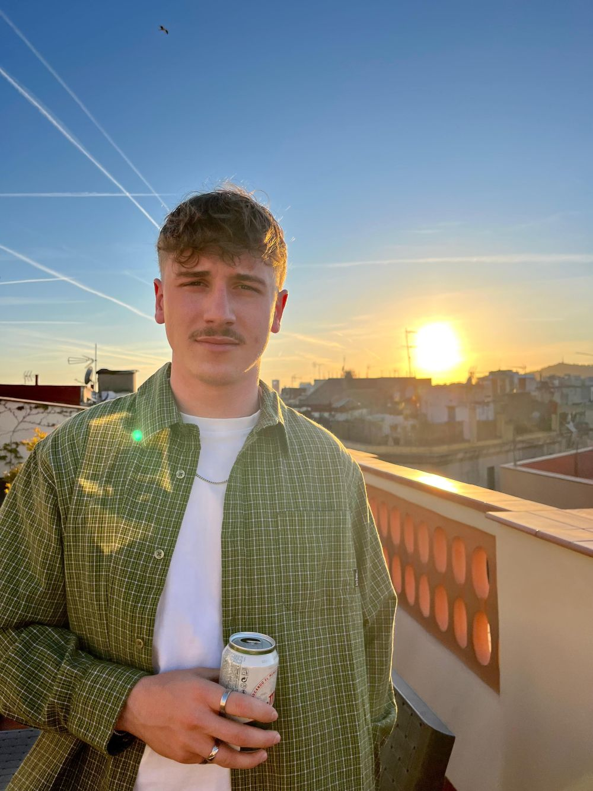

Fabio Krieger

Nah dran. An meinem Alltag.
Das bin ich.
Ich bin Fabio, 24 Jahre alt und habe im Sommer 2026 mein Studium in Multimediaproduktion gestartet. Als gelernter Mediamatiker EFZ arbeite ich seit knapp drei Jahren bei einer IT-Unternehmung in Cham – dort bin ich als Video & Multimediaproducer tätig.
In meiner Freizeit beschäftige ich mich viel mit Sport. Ich spiele beim VBC Willisau Volleyball und mache öfters Kraft- und Ausdauersport. Bleibt noch Zeit übrig nebst Job, Studium und Sport verbringe ich gerne Zeit mit meiner Freundin, meinen engsten Freunden und meiner Familie.
Seit über sechs Jahren trage ich den Karabiner mit meinem Schlüsselbund an meiner Hose – Tag für Tag. Gestartet hat es als cooles Accessoire, aber mittlerweile kann ich kaum ohne.